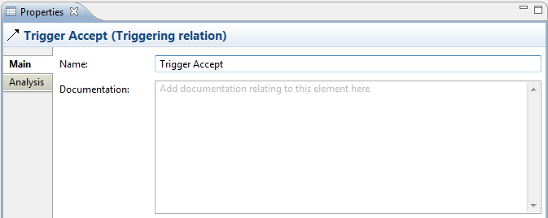
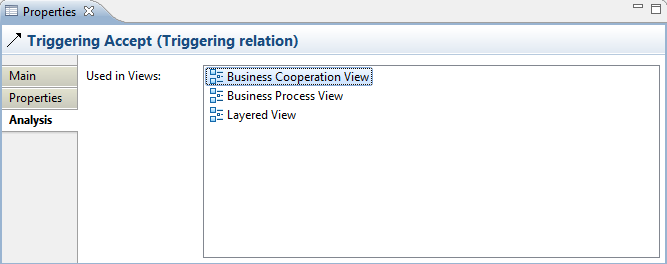

Selecting a model relationship in the Model Tree or in a View means that you can edit or view the following properties in the Properties Window:
The Main tab:
| Name: | The name of the ArchiMate relationship |
| Documentation: | A space to enter some user documentation relating to the ArchiMate relationship |

Editing the "Main" Properties for an ArchiMate Relationship
 In the "Documentation" text control, URLs that start with "http://" "https://" or "ftp://" will show as a hyperlink. Pressing the Ctrl / Command key will change the cursor to a "hand" cursor and you can open the link in a Browser.
In the "Documentation" text control, URLs that start with "http://" "https://" or "ftp://" will show as a hyperlink. Pressing the Ctrl / Command key will change the cursor to a "hand" cursor and you can open the link in a Browser.
The Analysis tab:
| Used in Views: | A table showing the Views (if any) where the selected relationship is used (displayed in a diagram). Double-clicking on an entry in the table will open the View and select the relationship (connection) in the diagram. |

Editing the "Analysis" Properties for an ArchiMate Relationship